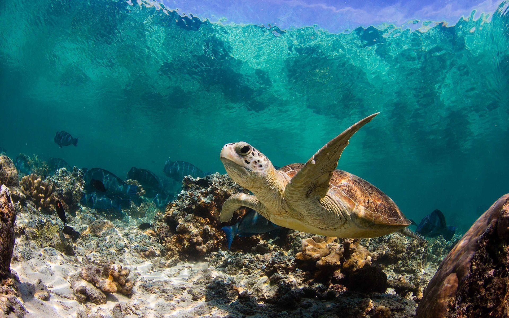

WELCOME!
To The World Of The Magnificient "SEA TURTLE"
(A remarkable reptile suited for both land as well as sea life)

Lets look into some facts concerning these astonishing creatures
Info on Sea Turtles |
|
|---|---|
 |
Sea Turtles scientifically named as Chelonioidea are a group of reptiles adapted to living in the marine environment. Sea turtles have streamlined bodies that help them swim efficiently in water. They have protective shells and can migrate long distances. Their limbs are flippers, which they use for swimming and steering. Sea turtles have a special way of breathing that lets them stay underwater for a long time. They mate in the sea and lay eggs on beaches. These amazing creatures can be found in all oceans except the polar regions. |